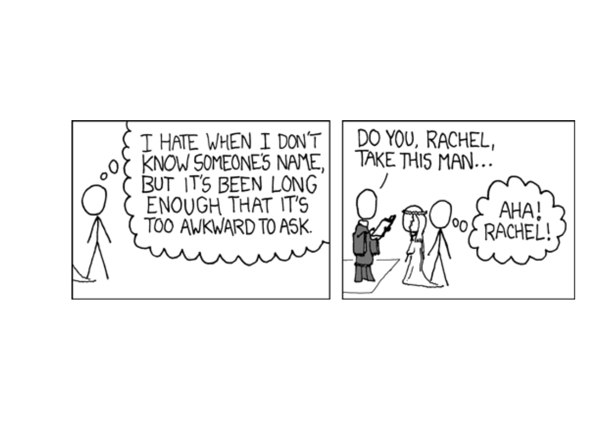
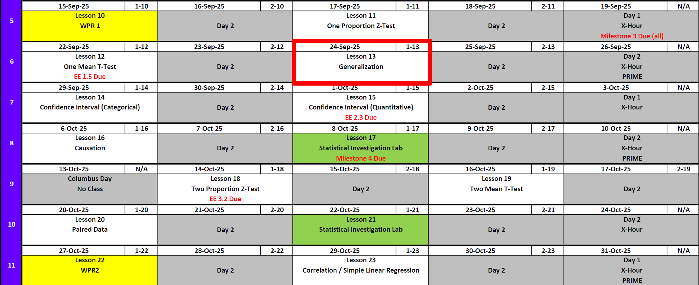
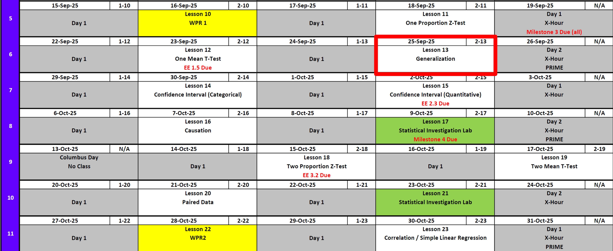
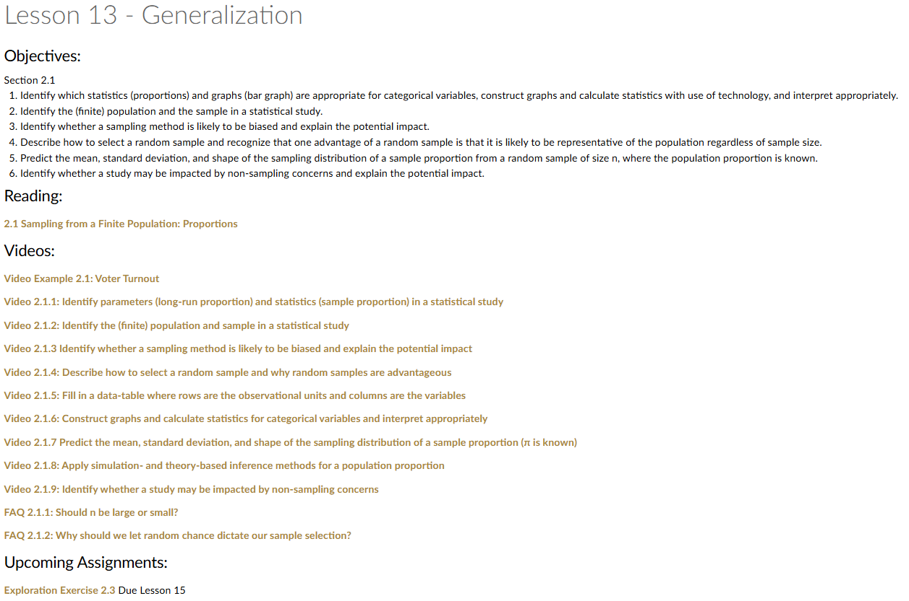
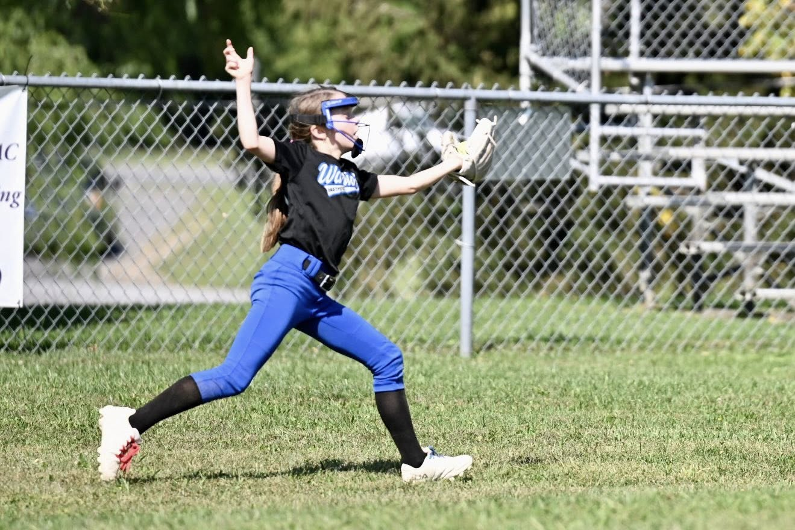
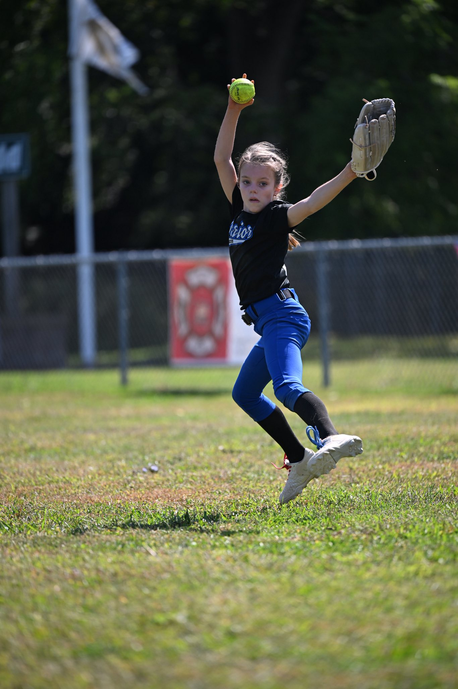
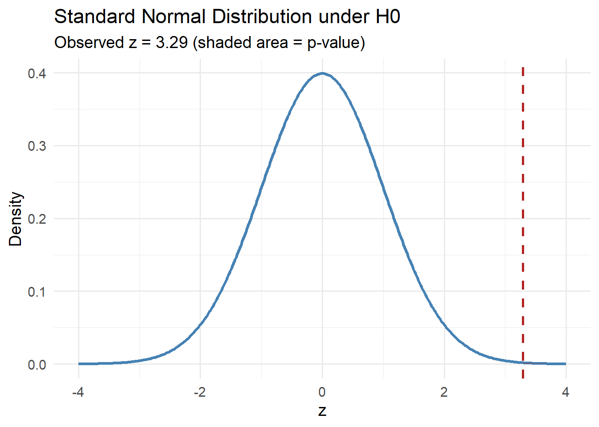
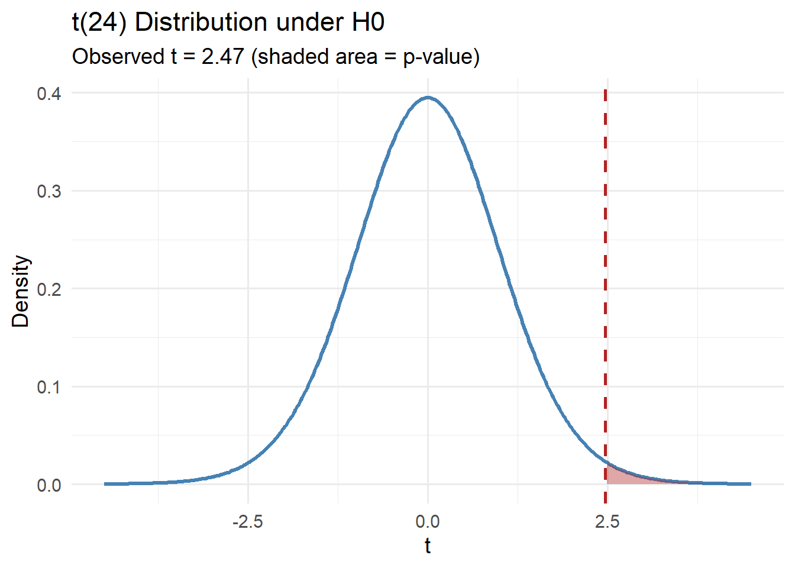

Lesson 13: Generalization
Lesson Administration
Calendar
Day 1

Day 2


Exploration Exercise 1.5
- If turned in this morning, can earn 100% of points.
- If turned in by 0700 tomorrow morning, can earn 80% of points.
Exploration Exercise 2.3
- ⏰ Due 0700 ET on 1 October
Milestone 4
- Lesson 17
- Milestone 4
- With partner
- Write 1-2 paragraphs per article summarizing the articles topic with a take away for its insight on your project.
- Make updates from Milestone 3 feedback.
- Fill out Annex B for my comments on Milestone 3.
- Turn in EVERYTHING in your working write up.
- Keep your binder up-to-date, but I don’t want to see it.
DMath Frisbee Update
Math 1 vs Systems
NotePreviously 3-0
4-0

Reese


Review: \(z\)-Tests for One Proportion
For all cases:
\[ z = \frac{\hat{p} - \pi_0}{\sqrt{\frac{\pi_0 (1 - \pi_0)}{n}}} \]
| Alternative Hypothesis | Formula for \(p\)-value | R Code |
|---|---|---|
| \(H_A: p > \pi_0\) | \(p = 1 - \Phi(z)\) | p_val <- 1 - pnorm(z_stat) |
| \(H_A: p < \pi_0\) | \(p = \Phi(z)\) | p_val <- pnorm(z_stat) |
| \(H_A: p \neq \pi_0\) | \(p = 2 \cdot (1 - \Phi(|z|))\) | p_val <- 2 * (1 - pnorm(abs(z_stat))) |
Where:
- \(\hat{p} = R/n\) (sample proportion)
- \(\pi_0\) = hypothesized proportion under \(H_0\)
- \(\Phi(\cdot)\) = cumulative distribution function (CDF) of the standard normal distribution.
Review: \(t\)-Tests for One Mean
For all cases:
\[ t = \frac{\bar{x} - \mu_0}{s / \sqrt{n}} \]
| Alternative Hypothesis | Formula for \(p\)-value | R Code |
|---|---|---|
| \(H_A: \mu > \mu_0\) | \(p = 1 - F_{t_{df}}(t)\) | p_val <- 1 - pt(t_stat, df) |
| \(H_A: \mu < \mu_0\) | \(p = F_{t_{df}}(t)\) | p_val <- pt(t_stat, df) |
| \(H_A: \mu \neq \mu_0\) | \(p = 2 \cdot (1 - F_{t_{df}}(|t|))\) | p_val <- 2 * (1 - pt(abs(t_stat), df)) |
Where:
- \(\bar{x}\) = sample mean
- \(\mu_0\) = hypothesized mean under \(H_0\)
- \(s\) = sample standard deviation
- \(n\) = sample size
- \(df = n - 1\) = degrees of freedom
- \(F_{t_{df}}(\cdot)\) = cumulative distribution function (CDF) of the Student’s \(t\) distribution with \(df\) degrees of freedom
Interpreting the \(p\)-value
Rejecting \(H_0\)
> Since the \(p\)-value is less than \(\alpha\) (e.g., \(0.05\)), we reject the null hypothesis.
> We conclude that there is sufficient evidence to suggest that [state the alternative claim in context].Failing to Reject \(H_0\)
> Since the \(p\)-value is greater than \(\alpha\) (e.g., \(0.05\)), we fail to reject the null hypothesis.
> We conclude that there is not sufficient evidence to suggest that [state the alternative claim in context].
What Happens When…
We alter different values?
What is a parameter…? And a statistic?
Code
library(shiny)
library(ggplot2)
library(dplyr)
library(tibble)
ui <- fluidPage(
titlePanel("One-Proportion (z) & One-Mean (t) Tests"),
withMathJax(),
tags$hr(),
tabsetPanel(
id = "tabs",
# ---------------- Proportion tab (z) ----------------
tabPanel(
title = "Proportion (z-test)",
fluidRow(
column(
width = 4,
h4("Inputs"),
numericInput("x", "Observed successes (x)", value = 2, min = 0, step = 1),
numericInput("n", "Sample size (n)", value = 19, min = 1, step = 1),
sliderInput("pi0", HTML("π<sub>0</sub> (null proportion)"),
min = 0, max = 1, value = 1/3, step = 0.01)
),
column(
width = 8,
h4("Formula"),
div(style = "font-size: 1.15em; margin-bottom: 8px;",
"$$ z = \\frac{\\hat{p} - \\pi_0}{\\sqrt{\\tfrac{\\pi_0(1 - \\pi_0)}{n}}} $$"
),
h4("Computed Values"),
tableOutput("value_table_prop"),
tags$br(),
h4("Standard Normal (z) under H0"),
plotOutput("plot_prop", height = "330px")
)
)
),
# ---------------- Mean tab (t) ----------------
tabPanel(
title = "Mean (t-test)",
fluidRow(
column(
width = 4,
h4("Inputs"),
numericInput("xbar", HTML("Sample mean (\\(\\bar{x}\\))"), value = 10, step = 0.1),
numericInput("s", HTML("Sample SD (\\(s\\))"), value = 3, min = 0.0001, step = 0.1),
numericInput("n_mean", "Sample size (n)", value = 20, min = 2, step = 1),
numericInput("mu0", HTML("\\(\\mu_0\\) (null mean)"), value = 9, step = 0.1),
selectInput("alt",
"Alternative hypothesis (affects plot subtitle only)",
choices = c("Two-sided" = "two.sided",
"Less than (μ < μ0)" = "less",
"Greater than (μ > μ0)" = "greater"),
selected = "two.sided")
),
column(
width = 8,
h4("Formula"),
div(style = "font-size: 1.15em; margin-bottom: 8px;",
"$$ t = \\frac{\\bar{x} - \\mu_0}{\\dfrac{s}{\\sqrt{n}}},\\qquad df = n-1 $$"
),
h4("Computed Values"),
tableOutput("value_table_mean"),
tags$br(),
h4("t Distribution under H0"),
plotOutput("plot_mean", height = "330px")
)
)
)
)
)
server <- function(input, output, session) {
# ===== Proportion (z) =====
phat <- reactive({
req(input$n > 0)
input$x / input$n
})
SE_prop <- reactive({
sqrt(input$pi0 * (1 - input$pi0) / input$n)
})
z_stat <- reactive({
(phat() - input$pi0) / SE_prop()
})
p_right_prop <- reactive({ 1 - pnorm(z_stat()) })
p_left_prop <- reactive({ pnorm(z_stat()) })
p_two_prop <- reactive({ 2 * (1 - pnorm(abs(z_stat()))) })
output$value_table_prop <- renderTable({
tibble::tibble(
`x (successes)` = input$x,
`n (trials)` = input$n,
`π0 (null)` = round(input$pi0, 4),
`p̂ = x/n` = round(phat(), 4),
`SE` = round(SE_prop(), 5),
`z` = round(z_stat(), 4),
`p (right)` = signif(p_right_prop(), 4),
`p (left)` = signif(p_left_prop(), 4),
`p (two-sided)` = signif(p_two_prop(), 4)
)
}, striped = TRUE, bordered = TRUE, spacing = "s", digits = 6)
output$plot_prop <- renderPlot({
z_grid <- seq(-4, 4, length.out = 400)
df <- tibble(z = z_grid, density = dnorm(z_grid))
ggplot(df, aes(x = z, y = density)) +
geom_line(linewidth = 1.2) +
geom_vline(xintercept = z_stat(), linetype = 2, linewidth = 1.2) +
labs(
x = "z",
y = "Density",
title = "Standard Normal Distribution (H0)",
subtitle = paste0("Observed z = ", round(z_stat(), 3))
) +
theme_minimal(base_size = 12)
})
# ===== Mean (t) =====
df_mean <- reactive({
req(input$n_mean >= 2)
input$n_mean - 1
})
SE_mean <- reactive({
input$s / sqrt(input$n_mean)
})
t_stat <- reactive({
(input$xbar - input$mu0) / SE_mean()
})
# Show ALL p-values for mean (like the proportion tab)
p_right_mean <- reactive({ 1 - pt(t_stat(), df = df_mean()) }) # H_A: μ > μ0
p_left_mean <- reactive({ pt(t_stat(), df = df_mean()) }) # H_A: μ < μ0
p_two_mean <- reactive({ 2 * (1 - pt(abs(t_stat()), df = df_mean())) }) # H_A: μ != μ0
output$value_table_mean <- renderTable({
tibble::tibble(
`x̄` = round(input$xbar, 4),
`s` = round(input$s, 4),
`n` = input$n_mean,
`μ0` = round(input$mu0, 4),
`SE = s/√n` = round(SE_mean(), 5),
`df` = df_mean(),
`t` = round(t_stat(), 4),
`p (right)` = signif(p_right_mean(), 5),
`p (left)` = signif(p_left_mean(), 5),
`p (two-sided)` = signif(p_two_mean(), 5)
)
}, striped = TRUE, bordered = TRUE, spacing = "s", digits = 6)
output$plot_mean <- renderPlot({
df0 <- df_mean()
t_grid <- seq(-4.5, 4.5, length.out = 400)
d <- tibble(t = t_grid, density = dt(t_grid, df = df0))
# pick the p-value matching the selected alternative for display only
p_disp <- switch(input$alt,
"less" = p_left_mean(),
"greater" = p_right_mean(),
"two.sided" = p_two_mean())
ggplot(d, aes(x = t, y = density)) +
geom_line(linewidth = 1.2) +
geom_vline(xintercept = t_stat(), linetype = 2, linewidth = 1.2) +
labs(
x = "t",
y = "Density",
title = paste0("t(", df0, ") Distribution under H0"),
subtitle = paste0("Observed t = ", round(t_stat(), 3),
" | Alt = ", input$alt,
" | p-value = ", signif(p_disp, 5))
) +
theme_minimal(base_size = 12)
})
}
shinyApp(ui, server)Generalization and Causation
- Generalization: We can generalize results to a larger population if the sample is random and representative of that population. Convenience samples don’t justify broad claims.
- Causation: We can claim causation only if the study design is a randomized experiment. Observational studies can show associations, but not cause-and-effect.
Live Examples
Left-Handedness
- “Who is left-handed?”
- We’ll test whether our class has a different left-handed rate than the commonly cited 10% at the 5% confidence level.
Heart Rate
- “Everyone, measure your resting heart rate (count beats for 15 seconds × 4).”
- We’ll test whether our class’s average resting heart rate is different from the typical 70 bpm, at the 10% significance level.
Board Problems
Problem 1
A recent poll asked 120 cadets whether they prefer running or rucking for morning PT. Out of the 120, 78 cadets preferred running.
At the 10% significance level, is there evidence that more than half of cadets prefer running?
Tasks:
- State the null and alternative hypotheses.
- Compute the test statistic.
- Draw the sampling distribution, marking the test statistic.
- Calculate the \(p\)-value.
- Make a decision at the stated significant level.
- Interpret the result in context.
NoteSolution
Step 1: Hypotheses
- \(H_0: p = 0.5\)
- \(H_A: p > 0.5\)
Step 2: Test Statistic
\[ \hat{p} = \frac{78}{120} = 0.65, \quad SE = \sqrt{\frac{0.5 (1 - 0.5)}{120}} \approx 0.0456 \]
\[ z = \frac{\hat{p} - 0.5}{SE} = \frac{0.65 - 0.5}{0.0456} \approx 3.29 \]
Step 3: Sampling Distribution & Sketch

Step 4: \(p\)-value
\[ p = 1 - \Phi(3.29) \approx 0.0005 \]
Step 5: Decision
Since \(p < 0.10\), reject \(H_0\).
Step 6: Interpret
There is strong evidence that more than half of cadets prefer running.
Problem 2
An instructor believes that the average number of push-ups completed by cadets in two minutes is greater than 70. A random sample of \(n = 25\) cadets had a mean of \(\bar{x} = 74.2\) with a sample standard deviation of \(s = 8.5\).
At the 10% significance level, test the instructor’s claim.
Tasks:
- State the null and alternative hypotheses.
- Compute the test statistic.
- Draw the sampling distribution, marking the test statistic.
- Calculate the \(p\)-value.
- Make a decision at the stated significant level.
- Interpret the result in context.
NoteSolution
Step 1: Hypotheses
- \(H_0: \mu = 70\)
- \(H_A: \mu > 70\)
Step 2: Test Statistic
\[ SE = \frac{s}{\sqrt{n}} = \frac{8.5}{\sqrt{25}} = 1.7 \]
\[ t = \frac{\bar{x} - \mu_0}{SE} = \frac{74.2 - 70}{1.7} \approx 2.47 \]
with \(df = n - 1 = 24\).
Step 3: Distribution & Sketch

Step 4: \(p\)-value
\[ p = 1 - F_{t_{24}}(2.47) \approx 0.011 \]
Step 5: Decision
Since \(p < 0.10\), reject \(H_0\).
Step 6: Interpret
There is evidence that the true mean number of push-ups is greater than 70.
Intro confidence interval
Before you leave
Today:
- Any questions for me?
Upcoming Graded Events
- WPR 2: Lesson 22